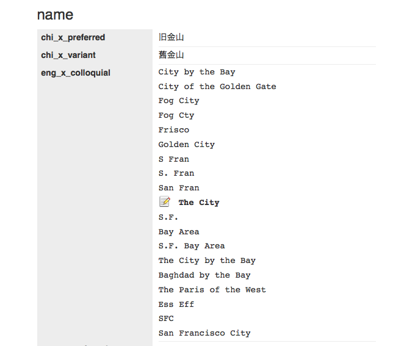

Yes No Fix
tl;dr
Opinions and fact-checking. About stuff. As CSV documents. From any webpage. Or at least Who’s On First Spelunker webpages. With code .
A short history
In the list of Really Good Things on the Internet These Days I still think the work done by the Government Digital Service in the United Kingdom to rebuild the gov.uk website is at, or near, the top. A close second would be the New York Public Library’s (NYPL) Building Inspector project.
The Building Inspector project began after the NYPL developed a suite of computer vision tools for extracting the building footprints from their extensive maps collection. The results were remarkably good for an automated process but still not perfect. Occasionally the software would get things wrong but sometimes it would return results that were maybe not wrong but not entirely correct either. To deal with these inconsistencies the NYPL created the Building Inspector website and asked the public to help out by asserting whether a footprint computed by their software was correct (yes), incorrect (no) or in need of some fixing (fix).
It looks like this:

The project has since evolved to allow contributors to vet more than just building footprints and the NYPL recently announced that people have contributed more than 1.5 million tasks since launching. That original concept to atomize the problem (individual building footprints) and then ask the public for simple observations (yes, no, fix) remains a stroke of genius. So we thought we’d try copying it.
How does it work
Yes No Fix is a single Javascript library with a pair of public API methods. Each method takes an arbitrary data structure as its input and renders it as a nested HTML table where each value (at the end of a nesting) has interactive controls to allow a viewer to assert an opinion (yes, no or fix) about that value. The second method will also append the rendered table to an existing DOM element in the webpage it was called from.
Here’s an example using the
names
section for
the city of San Francisco
from the Who’s On First
Spelunker
. The raw data looks like this:
"properties": {
"name:chi_x_preferred":[
"\u65e7\u91d1\u5c71"
],
"name:chi_x_variant":[
"\u820a\u91d1\u5c71"
],
"name:eng_x_colloquial":[
"City by the Bay",
"City of the Golden Gate",
"Fog City",
"Fog Cty",
"Frisco",
"Golden City",
"S Fran",
"S. Fran",
"San Fran",
"The City",
"S.F.",
"Bay Area",
"S.F. Bay Area",
"The City by the Bay",
"Baghdad by the Bay",
"The Paris of the West",
"Ess Eff",
"SFC",
"San Francisco City"
],
// and so on
And the rendered version looks like this:

When you mouse over a value - in this case the English colloquial name of
The City
- you’ll see an
edit
control.

If you click on it then a series of controls (yes, no and fix) will appear next to that value. Like this:
Yes
The first is yes which means that you agree with the value (and its parent nesting).

No
The second is no . No means no. San Francisco is not called Frisco .

[Ed. Some of us think
Frisco
is
actually
OK
. Which kind of proves the point of Yes No Fix.
San Fran
on the other hand…]

Fix
The third value is fix which means broadly this is weird data . If that seems a little vague and ambiguous that is because it’s meant to be. “Fix” is a shorthand for things that are sort of correct and but still incorrect or vice versa. Life is complicated that way.

Locked
Sometimes a value might be “locked” or “excluded” which means that it is not possible to make a
yesnofix
style assertion about it. The reasons why something might be excluded are defined by individual applications. We’ll explain how that’s done, below. In this example the
edtf:inception
and
edtf:cessation
dates are locked because they already have a default value of “unknown” so there’s not a lot of use in collecting opinions about them.

Reports
In the screenshot above there is a
show report
button. When clicked it will display three more elements: A comma-separated value (CSV) rendering of all the assertions that have been made so far and another button for submitting the report (and a button to hide everything).

By default, Yes No Fix will “submit” the report to a new browser window because that’s all it knows how to do. Here’s a plain-text version of the report shown in the screenshot above:
path,value,assertion,date
name.eng_x_colloquial#10,S.F.,1,2016-04-02T17:55:36.335Z
name.eng_x_colloquial#9,The City,1,2016-04-02T17:55:50.767Z
name.eng_x_colloquial#4,Frisco,0,2016-04-02T17:56:17.137Z
name.eng_x_colloquial#16,Ess Eff,-1,2016-04-02T17:57:38.917Z
Reports are formatted as CSV documents, with four columns:
-
pathrepresents the nested keys from your data structure (in this case thepropertiesdictionary from the underlying GeoJSON file for San Francisco collapsed in to a string using a.notation as a delimiter. -
valueis the raw value that someone is commenting on. -
assertionis a (signed) integer;1means yes,0means no and-1means fix. -
dateis an ISO-8601 date string indicating when the assertion was made
A couple things to note about paths:
-
As of this writing there are still some explicit Who’s On First -isms left in the Yes No Fix code. Specifically the expectation that keys have a colon-separated prefix (for example
name:eng_x_colloquial) that is parsed and used to group things in to buckets. Keys that don’t have a prefix are automatically grouped in to bucket called_global_, so if you had a key simply calleddateit would be encoded as_global_.datein the final CSV report. -
Array values in a path are denoted using a
#<OFFSET>syntax. For examplename.eng_x_colloquial#16is the 16th element in theproperties['name:eng_x_colloquial']array.
How to use
yesnofix.js
First grab a copy of the code from the js-mapzen-whosonfirst-yesnofix GitHub repository . Then add it to your webpages, like this:
<link rel="stylesheet" type="text/css" href="mapzen.whosonfirst.yesnofix.css" />
<script type="text/javascript" src="mapzen.whosonfirst.yesnofix.js"></script>
The simplest way to use
yesnofix.js
is to call the
apply
method with a target HTML element and a data structure. This will generate a pretty HTML table complete with Yes No Fix style controls for each value and insert it in to the DOM as a child of the target HTML element you’ve defined.
mapzen.whosonfirst.yesnofix.apply(data, target_el);
If you just want to render a data structure but delay or defer adding it to the DOM you can call the
render
method.
var pretty = mapzen.whosonfirst.yesnofix.render(data);
That’s it. By default every element in your data structure will be made Yes No Fix -able.
Customizing things
Warning: This is the part where things start to get a bit nerdy. Where “a bit nerdy” really means VERY VERY NERDY . If you’re not in to the nerdy bits you should have enough information to get started and can just jump to the bottom of the post .
One of the things that quickly became apparent integrating
yesnofix.js
with the Who’s On First spelunker is that many things needed to be customized. The whole point of a spelunker is to be able to
jump around between documents
so at a minimum we would need a way to teach the
yesnofix.js
rendering code to display certain things (like IDs) as links.
Customing things - Values
To do this for values you need to invoke the
set_custom_renderers
method passing “text” as the first argument and a custom function as the second argument. This function will be invoked for each value that the
yesnofix.js
code tries to render.
Your custom function will be invoked with two arguments:
data
which is the actual value in question and
ctx
which is the nested path in dot notation (described above) that contains
data
. Your custom function is expected to either return a function (that itself returns an HTML DOM element) or
null
. If your callback’s response is
null
then the code will simply include the raw value as-is.
The
yesnofix.js
code defines some handy helper methods for common tasks (like
render_code
or
render_link
) but in the example below you can see how we are also defining some custom methods, like
render_wof_id
.
var possible_wof = [
'wof.belongsto',
'wof.parent_id', 'wof.children',
// as so on...
];
var text_callbacks = {
'wof.id': mapzen.whosonfirst.yesnofix.render_code,
// and so on...
};
var text_renderers = function(d, ctx){
if ((possible_wof.indexOf(ctx) != -1) && (d > 0)){
return self.render_wof_id;
}
else if (text_callbacks[ctx]){
return text_callbacks[ctx];
}
// and so on...
else {
return null;
}
};
'render_wof_id': function(d, ctx){
var root = mapzen.whosonfirst.spelunker.abs_root_url();
var link = root + "id/" + encodeURIComponent(d) + "/";
var el = mapzen.whosonfirst.yesnofix.render_link(link, d, ctx);
var text = el.children[0];
text.setAttribute("data-value", mapzen.whosonfirst.php.htmlspecialchars(d));
text.setAttribute("class", "props-uoc props-uoc-name props-uoc-name_" + mapzen.whosonfirst.php.htmlspecialchars(d));
return el;
}
mapzen.whosonfirst.yesnofix.set_custom_renderers('text', text_renderers);
In this example we are rendering things that are WOF IDs (
wof.parent_id
,
wof.belongs_to
, and so on) as links but we aren’t rendering
wof.id
as a link since there is no point in linking to the webpage we are already looking at.
Customizing things - Dictionaries
The second thing we needed to customize were the value of keys themselves. For example, we define concordances in Who’s On First using short prefixes for other sources. A
Geonames
ID becomes
gn:id
, a
Library of Congress
ID becomes
loc:id
and so on. That’s useful and efficient for encoding data but not very satisfying to look at.
Just like text renderers, dictionary renderers are defined by invoking the
set_custom_renderers
method with “dict” as the first value and a custom function that returns a function (that returns a string) or
null
.
var dict_mappings = {
'wof.concordances.gn:id': 'geonames',
'wof.concordances.gp:id': 'geoplanet',
'wof.concordances.loc:id': 'library of congress',
// and so on...
];
var dict_renderers = function(d, ctx){
if (dict_mappings[ctx]){
return function(){
return dict_mappings[ctx];
};
}
return null;
};
mapzen.whosonfirst.yesnofix.set_custom_renderers('dict', dict_renderers);
In this example
loc:id
becomes “library of congress” and so on. You may noticed in the screenshots above that we haven’t yet defined custom handlers for the
name:
properties so they all still get rendered with names like “eng_x_variant” or “chi_x_preferred”. We should fix that.
Customizing things - Exclusions (or locking things)
Finally some things just aren’t up for debate. The reasons why an application may not want solicit feedback on certain bits are data are many and varied so we’ll just leave it at at. The point is that you may need to prevent certain properties from being Yes No Fix -able, so you can.
You do this by invoking the
set_custom_exclusions
method padding “text” as the first argument and a custom function that returns a function (that return a boolean value). Like all the others, your custom function will be invoked with a
data
(the value) property and a
ctx
(the context or path) property. You might be starting to see a pattern by now.
var text_exclusions = function(d, ctx){
return function(){
if (ctx.match(/^geom/)){
return true;
}
else if ((ctx.match(/^edtf/)) && (d == "uuuu")){
return true;
}
// and so on...
else {
return false;
}
};
};
mapzen.whosonfirst.yesnofix.set_custom_exclusions('text', text_exclusions);
In this example we are locking things prefixed with
geom
because their values are derived from
Sean Gilles
… I mean, math. We are also locking things prefixed
edtf
(for the Library of Congress’
Extended Date/Time Format
) whose value is already
uuuu
which is the shorthand for “unknown”.
Customizing things - Report handlers
Yes No Fix doesn’t concern itself with what happens to a report, by design.
Its only concern is with the user controls for collecting assertions and finally rendering them in to a blob of CSV text. After that it is left up to individual applications using
yesnofix.js
to tell it what to do. An application might post the data to a remote server using an API, send the report somewhere via email, try to analyze the data locally and perform an action. Whatever.
Custom report handlers are just plain old Javascript functions that accept a string (the CSV text of the report) as their only argument, like this:
var submit_handler = function(report){
// do something with report here - the point is
// that yesnofix.js is agnostic about the meaning
// of "do something"
};
mapzen.whosonfirst.yesnofix.set_submit_handler(submit_handler);
mapzen.whosonfirst.yesnofix.apply(data, target_el);
That’s it. If your application has defined a custom submit handler it will be invoked when a user presses the
submit report
button. If you haven’t defined a custom handler then the default behaviour is display the CSV text of the report in a new browser window.
Customizing things - enabling or disabling editing controls
For a little over a month now
yesnofix.js
has been running quietly on the Who’s On First
Spelunker
, but disabled. What that means is that the properties displayed for a place are being rendered by
yesnofix.js
but the editorial controls have been turned off. We did that with a handy
enabled
method that accepts a boolean as its only argument.
mapzen.whosonfirst.yesnofix.enabled(false);
As we got ready for this blog post we simply removed that method call. For the technically minded, the Spelunker’s mapzen.whosonfirst.properties.js files offers a concrete example of all the customizations described so far.
Yes No Fix and the Spelunker
I mentioned that Yes No Fix is now enabled on the Who’s On First Spelunker, which is only half-true. Yes No Fix is absolutely enabled and we’d love for you to try and it out and let us know what does and doesn’t work. As of this writing though any reports you generate don’t have a place (in Who’s On First -land) to go yet.
They will but, again by design, the data reporting is meant to be entirely separate from the data collection. We’re finishing up the details on the data collection piece and so, in the meantime, we’re going to light up the data reporting side of things and see how that works first.

Once both of these things are up and running the next task will be to use those reports to inform the editorial tools and processes we are starting to build for managing Who’s On First. But that’s another blog post for another day.
Yes No Fix is not just a Who’s On First (or a Mapzen) thing

Yes No Fix is not designed to work with any one application but rather arbitrary blobs of data. For example, once we finish getting the data collection hooks working the obvious next step is to make the neighbourhoods (and other placetypes) in the Who’s On First I Am Here map Yes-No-Fix -able.
My current mornings-and-weekends project is building a tool that will create a static HTML archive of all the things I’ve collected at, or on the website of, the Cooper Hewitt Smithsonian Design Museum . The tool uses the museum’s API to fetch data about the objects I’ve collected as well as the act of collecting them.
Like the properties in a Who’s On First document the Cooper Hewitt data is encoded as
blobs of JSON
which is great for robots but not really great for humans to look at. I was able to drop the
yesnofix.js
libraries in to my code and
point the API response blobs at them
and
poof
there was something a little less terrible to look at. Just the way the Spelunker has been using
yesnofix.js
with the editorial controls disabled, for over a month now.

This tool is still very much a “wet paint” project so it hasn’t been taught to use any of the fancy rendering tricks described above but that’s really just a question of time-and-typing. Likewise the actual Yes No Fix controls are disabled but maybe it’s worth enabling them and creating a custom submit handler directing people to send their reports to the museum via their Zendesk account .

This is what we mean when we say that Yes No Fix is designed to be agnostic about what happens with the data it collects. Also… OMG, that lamp!!!!
Version Less-than-one
It is still early days for
yesnofix.js
and there are many things it doesn’t do or doesn’t do as well as it should yet. A short and not-comprehensive list includes:
- Keyboard shortcuts
- Working well (or at all) on mobile devices
- Working well with multi-level nested data structures, specifically where to put all those nested tables on a finite amount of screen space and then where squeeze in the editorial controls
- Support for any language besides English
- Proper testing for browser support
- Better documentation, particularly for all the customization handlers
But it’s a start. It’s also, we hope, a start at finding a middle ground between not accepting any feedback about the data in Who’s On First and throwing the doors wide-open and letting anyone edit whatever they want. The latter just isn’t going to happen soon for a whole bunch of reasons but the former also feels kind of rude. Yes No Fix is meant to be a way for people to contribute to the data and, once the data collection piece is complete, for that work to have a safe place for that work to live on the internet and to start to be used to affect the final editorial work.
Yes No Fix is not a perfect solution to the problem, and there is plenty of work left to do, but our hope is that it will at least make things a little better than they were yesterday.

{kind=link}